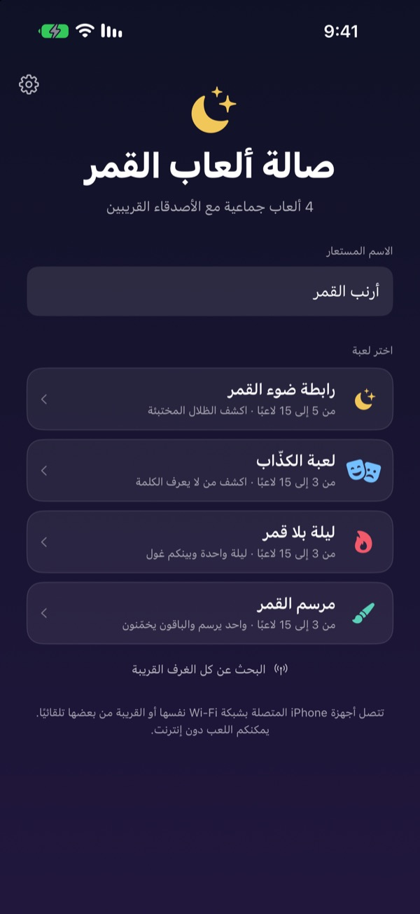
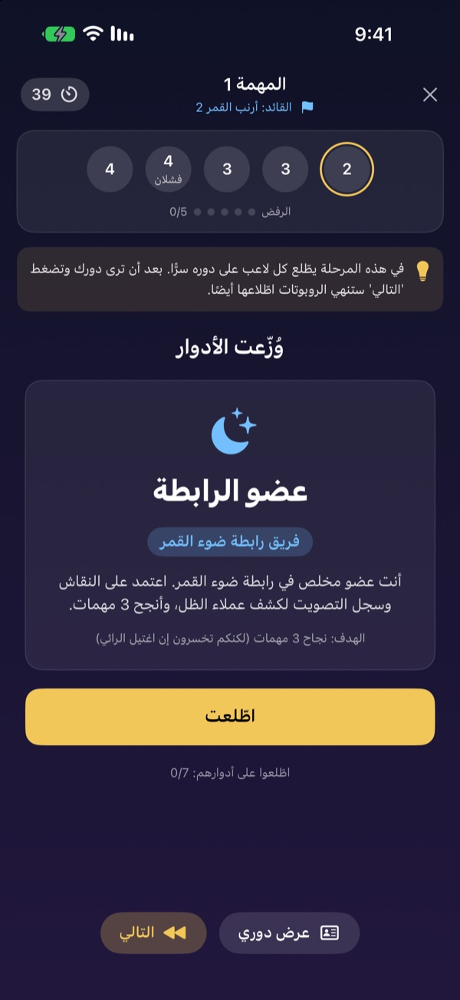
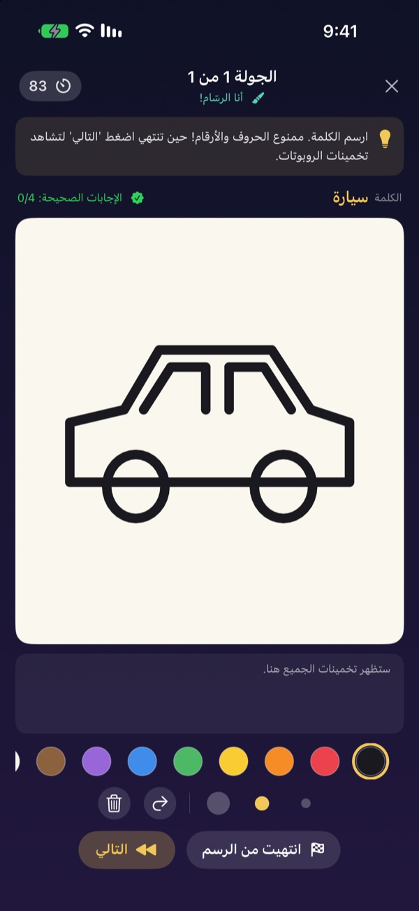
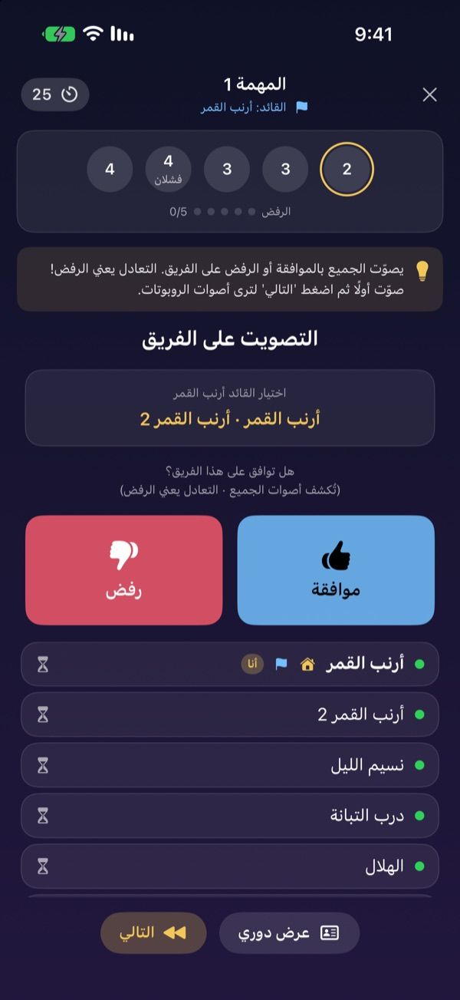

اجتمع الأصحاب.
أخرجوا هواتفكم.
يفتح شخص واحد غرفة وينضم القريبون منه في ثوانٍ. تظهر الأدوار والكلمات السرية على شاشة كل لاعب وحده، فلا أوراق ولا أحد يضطر إلى إدارة اللعبة بدل أن يلعب.
استضافة لعبة الكذاب ومرسم القمر مجانية. أما رابطة ضوء القمر وليلة بلا قمر فيكفي أن يملك المضيف وحده Pro. بلا حساب وبلا إنترنت.

جرّبوا جولة من لعبة الكذاب
تخيّلوا خمسة أجهزة iPhone على الطاولة، واضغطوا على كل واحد لتلقوا نظرة. لاعب واحد فقط لا يعرف الكلمة. ويمكنكم تمرير الشاشة بين الأصدقاء إن أحببتم.
جمعة كبيرة، وسهرة طويلة، ولا شيء نلعبه
سهرة مع الأصحاب، أو رحلة إلى استراحة، أو عيد مع العائلة. في ألعاب كشف الهويات لا بد أن يجلس أحدكم جانبًا ليدير اللعبة، والأوراق المطوية لا تبقى سرية تمامًا. وفي مكان شبكته ضعيفة لا تنفع الألعاب عبر الإنترنت. صالة ألعاب القمر تجعل أجهزة iPhone تدير اللعبة وتوزّع الأدوار وتتصل ببعضها.
دورك يبقى على شاشتك
حين تبدأ اللعبة يحصل كل جهاز iPhone على دوره أو كلمته. لا تمرير أوراق ولا "أغمضوا عيونكم".
أثناء التصويت ترون فقط من صوّت. أما لمن صوّت كل لاعب فيبقى سرًّا حتى لحظة الكشف.

أربع ألعاب تناسب كل جمعة
تحايلوا بالكلام في لعبة الكذاب، وطاردوا الظلال بالمهمات والتصويت في رابطة ضوء القمر، واكشفوا الغول في ليلة واحدة في ليلة بلا قمر، أو ارسموا وخمّنوا في مرسم القمر.
رابطة ضوء القمر تبدأ من 5 لاعبين والبقية من 3، وكل لعبة تتسع حتى 15.

لعبة جديدة؟ تعلّمها في دقائق
لكل لعبة وضع طريقة اللعب، تلعب فيه جولة مع الروبوتات خطوة بخطوة. اقرأ الإرشاد في الأعلى واضغط التالي.
إن أُغلق التطبيق أو انقطع الاتصال، اضغط متابعة في الشاشة الرئيسية لتعود إلى الجولة نفسها.

ثلاث خطوات للبدء
- 1
اختر اسمًا ولعبة
يفتح الجميع التطبيق ويكتبون أسماءهم ويختارون اللعبة.
- 2
أنشئ غرفة أو انضم إليها
ينشئ شخص واحد الغرفة، ويجدها الباقون في البحث عن غرف قريبة.
- 3
المضيف يبدأ
حين يدخل الجميع يضغط المضيف ابدأ اللعبة، والتطبيق يتولى الباقي.
الألعاب الأربع
- لعبة الكذاب · من 3 إلى 15 لاعبًا
- يحصل الجميع على الكلمة نفسها إلا واحدًا. صِفوها بالتناوب ثم صوّتوا على الكذاب. وإن كُشف الكذاب لكنه خمّن الكلمة فهو الفائز.
- رابطة ضوء القمر · من 5 إلى 15 لاعبًا
- اكشفوا الظلال المختبئة بين أعضاء الرابطة. يختار القائد فريق المهمة، ويصوّت الجميع بالموافقة أو الرفض، ثم يلعب الفريق نجاحًا أو فشلًا سرًّا. أول من يصل إلى ثلاث مهمات يحسم اللعبة.
- ليلة بلا قمر · من 3 إلى 15 لاعبًا
- ليلة واحدة وغول مختبئ في القرية. في الليل يتحرك العرّاف ولص الليل والمشاغب سرًّا. ومع الفجر تتناقشون ولكم تصويت واحد لكشف الغول.
- مرسم القمر · من 3 إلى 15 لاعبًا
- يرسم لاعب الكلمة ويخمّن الباقون في الدردشة. كلما خمّنت أسرع زادت نقاطك، ويكسب الرسّام نقاطًا عن كل تخمين صحيح.
يمكن تجربة أي لعبة وحدك مع الروبوتات أولًا في وضع طريقة اللعب.
أسئلة
لا أرى الغرفة.
تأكّدوا أن المضيف واللاعبين على شبكة Wi-Fi نفسها أو قريبون من بعضهم. يجب تفعيل صالة ألعاب القمر في الإعدادات ▸ الخصوصية والأمن ▸ الشبكة المحلية ليجد الأجهزة القريبة. وتشغيل Wi-Fi والبلوتوث معًا يعطي أثبت اتصال.
هل يجب السماح بالوصول إلى الشبكة المحلية؟
نعم. بهذا يجد التطبيق أجهزة iPhone القريبة ويتصل بها. إن ضغطت عدم السماح، فعّله من جديد في الإعدادات ▸ الخصوصية والأمن ▸ الشبكة المحلية.
انقطع اتصالي في منتصف اللعبة.
افتح التطبيق مجددًا واضغط متابعة في الشاشة الرئيسية لتعود إلى الغرفة والجولة نفسيهما. دورك ونقاطك كما هي. وإن لم يعد الاتصال بعد مدة، انضم من جديد من قائمة الغرف.
توقف أحدهم عن الاستجابة وتعطلت اللعبة.
يستطيع المضيف إخراج اللاعب الذي لا يستجيب في أي وقت، فتُحسب اللعبة من جديد بمن بقي وتستمر. ويمكن لوضع مدير اللعبة أيضًا تخطي المرحلة المتوقفة.
كم لاعبًا نحتاج؟
رابطة ضوء القمر تحتاج 5. لعبة الكذاب وليلة بلا قمر ومرسم القمر تبدأ من 3. وكل لعبة تتسع حتى 15. عددكم قليل؟ تعلّموا القواعد مع الروبوتات في وضع طريقة اللعب.
هل نحتاج إلى إنترنت أو حساب؟
لا. بلا تسجيل ولا دخول ولا إنترنت. تتصل أجهزة iPhone القريبة مباشرة، ولا تُرسل بيانات اللعبة إلى أي خادم.
هل أستطيع تجربة لعبة وحدي أولًا؟
نعم. اختر لعبة ثم طريقة اللعب (تدرّب مع الروبوتات). تدخل الروبوتات الغرفة وتلعب جولة كاملة خطوة بخطوة.
كيف أبلّغ عن خلل أو أرسل فكرة؟
أرسلها مباشرة من الإعدادات (الترس) ▸ الدعم في التطبيق، أو راسلنا على العنوان أدناه. سنرد عليك في أقرب وقت.
للإبلاغ عن خلل أو مشاركة فكرة أو أي شيء آخر: راسلنا على leeo@kakao.com.